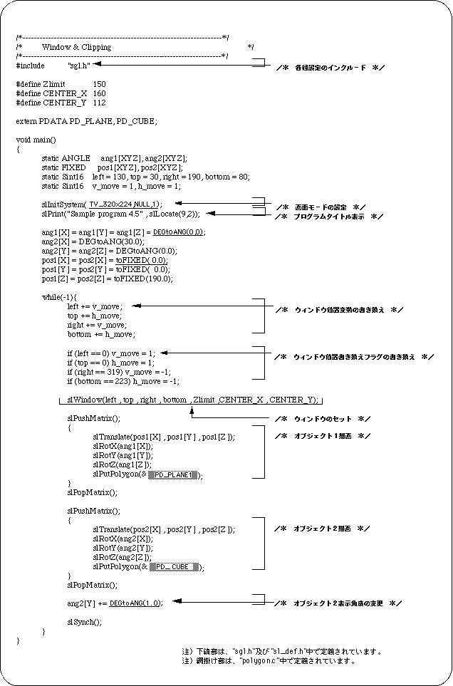
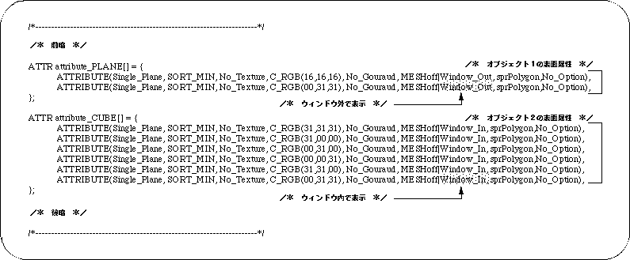

Return to previous page | Return to menu | Go to next page
The figure below shows an example of object display using the sample program “sample_4_5” using a window.
Object 1 is a rectangular plate polygon, and object 2 is a cubic polygon. They are arranged so that they intersect each other at a certain Z coordinate.
The display when the window is set using the library function “slWindow” is d) in the figure below.
Object 1 is set to display outside the window area, and object 2 is set to display inside the window area (this setting is described below).

Note 1) Object 1 is displayed outside the window
Note 2) Object 2 is displayed in the window


In SGL, you can show / hide objects in and out of the window. This switching can be set for each polygon surface as a polygon attribute.
Details will be given in “Chapter 7: Polygon surface attributes”, but here we introduce the part corresponding to the polygon surface attributes in the data file “polygon.c” used in the sample program.
